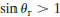
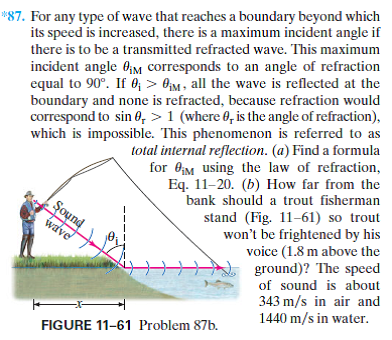
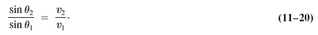

(a)
According to total internal reflection,
And
The incident angle is
Here, is the incident angle of the air and  is the incident angle of the water
is the incident angle of the water
Solving for
Therefore, the incident angle is.
For any type of wave that reaches a boundary beyond which its speed is increased, there is a maximum incident angle if there is to be a transmitted refracted wave. This maximum incident angle corresponds to an angle of refraction equal to 90°. If all the wave is reflected at the boundary and none is refracted, because refraction would correspond to  (where is the angle of refraction), which is impossible. This phenomenon is referred to as total internal reflection. (a) Find a formula for using the law of refraction, Eq. 11–20. (b) How far from the bank should a trout fisherman stand (Fig. 11–61) so trout won’t be frightened by his voice (1.8 m above the ground)? The speed of sound is about 343 m/s in air and 1440 m/s in water.


(a)
According to total internal reflection,
And
The incident angle is
Here, is the incident angle of the air and is the incident angle of the water
Solving for
Therefore, the incident angle is.
(b)
According to the figure, the angle of incidence is
Here, is the velocity of the air and is the velocity of the water
Substitute 343 m/s as and 1440 m/s as
We can get the below value from the given figure.

Rewrite for 
Substitute 13.80 as
Therefore, the distance is